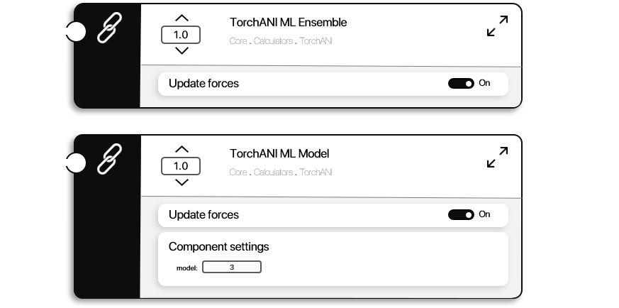

TorchANI
TorchANI is a Python implementation of ANI machine learning model for energy calculation. Trained on a large dataset of DFT calculation results, TorchANI is able to obtain DFT-level accuracy in energy calculation in a fraction of the time. For more details, read the original paper. Making use of the PyCall package and Julia's native methods for code integration, ProtoSyn incorporates TorchANI as an EnergyFunctionComponent.
ProtoSyn.Calculators.TorchANI.get_ani_species — Functionget_ani_species(container::ProtoSyn.AbstractContainer)Return a Vector{Int} with the atomic number of each Atom instance in the given AbstractContainer container, according to a periodic table.
See also
calc_torchani_model calc_torchani_ensemble
Examples
julia> ProtoSyn.Calculators.TorchANI.get_ani_species(pose.graph[1][1])
11-element Vector{Int64}:
7
1
6
1
6
1
1
8
1
6
8ProtoSyn.Calculators.TorchANI.calc_torchani_ensemble — FunctionCalculators.calc_torchani_ensemble([::A], pose::Pose, update_forces::Bool = false) where {A <: ProtoSyn.AbstractAccelerationType}Calculate and return the Pose pose energy according to the whole TorchANI neural network ensemble. The optional A parameter defines the acceleration type used (note that only CUDA_2 is available, any other acceleration type will result in an error). If left undefined the default ProtoSyn.acceleration.active mode will be used. By setting the update_forces flag to true (false by default), this function will also calculate and return the forces acting on each atom based on the whole TorchANI neural network ensemble.
See also:
Examples
julia> ProtoSyn.Calculators.TorchANI.calc_torchani_ensemble(pose)
(-0.12801790237426758, nothing)
julia> ProtoSyn.Calculators.TorchANI.calc_torchani_ensemble(pose, true)
(-0.12801788747310638, [ ... ])ProtoSyn.Calculators.TorchANI.calc_torchani_model — FunctionCalculators.calc_torchani_model([::A], pose::Pose; update_forces::Bool = false, model::Int = 3) where {A}Calculate and return the Pose pose energy according to a single TorchANI model neural network. The model can be defined using model_index (from model 1 to 8, default is 3).The optional A parameter defines the acceleration type used (note that only CUDA_2 is available, any other acceleration type will result in an error). If left undefined the default ProtoSyn.acceleration.active mode will be used. By setting the update_forces flag to true (false by default), this function will also calculate and return the forces acting on each atom based on a single TorchANI model neural network.
Each model will return a slightly different value for the energy of the molecular system. Use calc_torchani_ensemble for a more accurate (and slow) energy prediction. However, as in most cases the energy value is used in comparison with multiple states/frames, calc_torchani_ensemble prediction may be suficient.
See also:
calc_torchani_ensemble calc_torchani_model_xmlrpc
Examples
julia> ProtoSyn.Calculators.TorchANI.calc_torchani_model(pose)
(-0.12573561072349548, nothing)
julia> ProtoSyn.Calculators.TorchANI.calc_torchani_model(pose, true)
(-0.12573561072349548, [ ... ])In ProtoSyn >= 1.0, this function has a memory leak on the Python call. Multiple calls to calc_torchani_model require often GC.gc(false) calls to impede the 'CUDA out of memory' error. In order to prevent/automate this process, consider the following options:
(1) - Use an EnergyFunction struct (with automatic calls to GC.gc(false), as in:
EnergyFunction([ProtoSyn.Calculators.TorchANI.get_default_torchani_model()])
(2) - Use calc_torchani_model_xmlrpc instead.
ProtoSyn.Calculators.TorchANI.get_default_torchani_ensemble — Function get_default_torchani_ensemble(;α::T = 1.0) where {T <: AbstractFloat}Return the default TorchANI ensemble EnergyFunctionComponent. α sets the component weight (on an EnergyFunction instance). This component employs the calc_torchani_ensemble method, therefore predicting a structure's TorchANI energy based on the whole TorchANI ensemble (Note: This can be very slow).
See also
calc_torchani_ensemble get_default_torchani_model
Examples
jldoctest julia> ProtoSyn.Calculators.TorchANI.get_default_torchani_ensemble() Name : TorchANI_ML_Ensemble Weight (α) : 1.0 Update forces : true Setings : -
ProtoSyn.Calculators.TorchANI.get_default_torchani_model — Function get_default_torchani_model(;α::T = 1.0) where {T <: AbstractFloat}Return the default TorchANI model EnergyFunctionComponent. α sets the component weight (on an EnergyFunction instance). This component employs the calc_torchani_model method, therefore predicting a structure's TorchANI energy based on a single model.
Settings
model::Int- Defines which model of the TorchANI ensemble to use.
See also
calc_torchani_model get_default_torchani_ensemble
Examples
jldoctest julia> ProtoSyn.Calculators.TorchANI.get_default_torchani_model() Name : TorchANI_ML_Model Weight (α) : 1.0 Update forces : true Setings : :model => 3

Figure 1 | A diagram representation of the default TorchANI ML Ensemble and TorchANI ML Model EnergyFunctionComponent instances, obtained by usign the get_default_torchani_ensemble and get_default_torchani_model methods, respectively. While the TorchANI ML Ensemble is more accurate, it's also significantly slower. Depending on the application, employing a single model of the ensemble (of 8 models) might be sufficient.
ProtoSyn also makes available the TorchANI ML Model EnergyFunctionComponent instance as a call to an XML-RPC server. This protocol spawns a Python server in parallel, running TorchANI, who receives XML requests from Julia and returns the calculated energy and forces. This functionality might be useful in certain systems and machines.
ProtoSyn.Calculators.TorchANI.start_torchANI_server — Functionstart_torchANI_server()If TorchANI.server is set to nothing, start a new TorchANI XML-RPC server. Return a XMLRPC.ClientProxy (used to send XML requests to the created server).
See also:
Examples
julia> ProtoSyn.Calculators.TorchANI.start_torchANI_server()
Starting TorchANI XML-RPC server ...
TorchANI XML-RPC server is online!
ProtoSyn.XMLRPC.ClientProxy("http://localhost", 50000, "http://localhost:50000")
julia> ProtoSyn.Calculators.TorchANI.start_torchANI_server()
┌ Warning: TorchANI XML-RPC server is already online!
└ @ ProtoSyn.Calculators.TorchANI ~/project_c/ProtoSyn.jl/src/Core/Calculators/torchani_xmlrpc.jl:25
ProtoSyn.XMLRPC.ClientProxy("http://localhost", 50000, "http://localhost:50000")ProtoSyn.Calculators.TorchANI.stop_torchANI_server — Functionstop_torchANI_server()If TorchANI.server is not set to nothing, kill the current TorchANI XML-RPC server.
See also:
Examples
julia> ProtoSyn.Calculators.TorchANI.stop_torchANI_server()
julia> ProtoSyn.Calculators.TorchANI.stop_torchANI_server()
┌ Warning: No online TorchANI XML-RPC server was found.
└ @ ...ProtoSyn.Calculators.TorchANI.calc_torchani_model_xmlrpc — FunctionCalculators.calc_torchani_model_xmlrpc([::A], pose::Pose, update_forces::Bool = false; model::Int = 3) where {A}Calculate the pose energy according to a single TorchANI model neural network, using the XML-RPC protocol. If no TorchANI XML-RPC server is found, a new one is spawned (in parallel) from file torchani_server.py. The model can be defined using model (from model 1 to 8, default is 3). The optional A parameter defines the acceleration mode used (only CUDA_2 is available, any other acceleration type will result in an error). If left undefined the default ProtoSyn.acceleration.active type will be used. If update_forces is set to true (false, by default), return the calculated forces on each atom as well.
See also
calc_torchani_ensemble calc_torchani_model
Examples
julia> ProtoSyn.Calculators.TorchANI.calc_torchani_model_xmlrpc(pose)
(4.698066234588623, nothing)
julia> ProtoSyn.Calculators.TorchANI.calc_torchani_model_xmlrpc(pose, true)
(4.698066234588623, [ ... ])If you use this function in a script, it is recommended to add ProtoSyn.Calculators.TorchANI.stop_torchANI_server() at the end of the script, as the automatic stopping of TorchANI XML-RPC server is not yet implemented, as of ProtoSyn >= 1.0.
ProtoSyn.Calculators.TorchANI.get_default_torchani_model_xmlrpc — Functionget_default_torchani_model_xmlrpc(;α::T = 1.0) where {T <: AbstractFloat}Return the default TorchANI model EnergyFunctionComponent. α sets the component weight (on an EnergyFunction instance). This component employs the calc_torchani_model_xmlrpc method, therefore predicting a structure's TorchANI energy based on a single model and starting a new XMLRPC server (in parallel) if necessary.
Settings
model::Int- Defines which model of the TorchANI ensemble to use.
See also
Examples
julia> ProtoSyn.Calculators.TorchANI.get_default_torchani_model_xmlrpc()
Name : TorchANI_ML_Model_XMLRPC
Weight (α) : 1.0
Update forces : true
Setings :
:model => 3